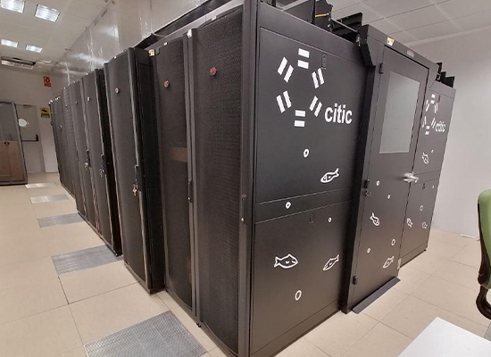

Mis proyectos

Uso de algoritmos de aprendizaje máquina para la detección de ciberacoso en redes sociales
Desarrollo de un TFG (Trabajo de Fin de Grado) sobre el contraste de varios modelos de Machine Learning a la hora de predecir el comportamiento de diferentes comentarios en la red social Vine.

Análisis de necesidades de cómputo intensivo y despliegue de un sistema de colas en un CPD
TFM (Trabajo de Fin de Máster) elaborado en colaboración con el CITIC como propuesta para la mejora del sistema de peticiones de recursos de cómputo dentro de su infraestructura, a la vez que se lleva a cabo un análisis comparativo de la plataforma de virtualización utilizada frente a otras alternativas del sector.